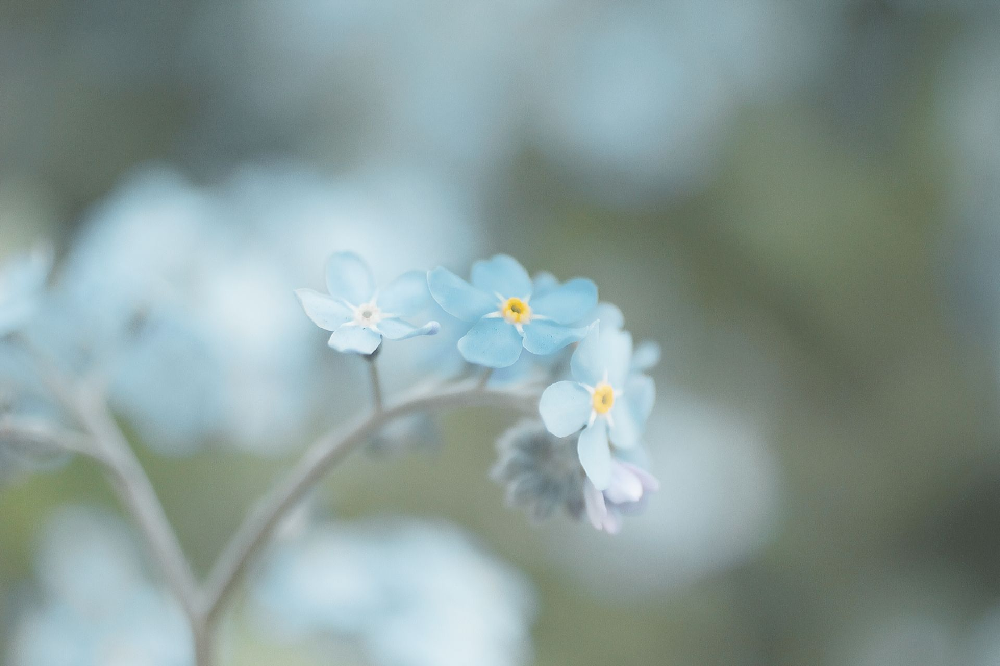

Portafolio de Fotografía
Imágenes capturadas con mirada propia.
Biografía
Fotógrafa dedicada a capturar momentos y emociones a través de la lente, con especial interés en la luz natural y los detalles cotidianos.
Obra

Paisaje de niebla matutina
Montañas cubiertas de niebla al amanecer, capturando la quietud del valle antes del día.
Ver proyecto completo
Retrato en luz natural
Rostro iluminado por la ventana, expresión serena y mirada directa hacia la cámara.
Ver proyecto completo

Detalle arquitectónico
Líneas geométricas de un edificio moderno, juego de sombras y luces sobre concreto.
Ver proyecto completo
Naturaleza en movimiento
Hoja cayendo sobre agua quieta, concentración en el instante fugaz del otoño.
Ver proyecto completo
Urbanidad nocturna
Calles vacías bajo farolas encendidas, soledad y silencio en la ciudad dormida.
Ver proyecto completoContacto
Escríbeme para agendar una sesión o conocer más sobre mi trabajo.
Correo: contacto@pazjaviera.cl | Instagram: @pazjaviera
Exposiciones
Próximamente: información sobre exposiciones colectivas e individuales.
Proyectos
Selección de proyectos fotográficos realizados en colaboración y de forma independiente.